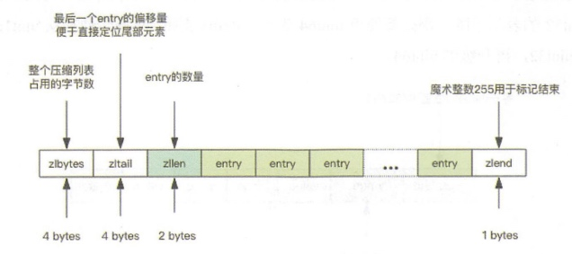
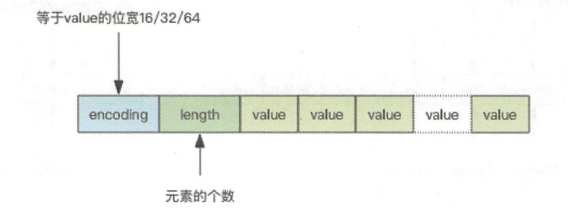

Redis 是一个非常耗费内存的数据库。Redis 作者为了优化数据结构的内存占用，也苦心孤诣增加了非常多的优化点。
32bit vs 64bit
Redis 如果使用 32bit 进行编译，内部所有数据结构所使用的指针空间占用会少一半，如果你对 Redis 使用内存不超过 4G，可以考虑使用 32bit 进行编译，可以节约大量内存。4G 的容量作为一些小型站点的缓存数据库是绰绰有余了，如果不足还可以通过增加实例的方式来解决。
小对象压缩存储 (ziplist)
如果 Redis 内部管理的集合数据结构很小，它会使用紧凑存储形式压缩存储。
这就好比 HashMap 本来是二维结构，但是如果内部元素比较少，使用二维结构反而浪费空间，还不如使用一维数组进行存储，需要查找时，因为元素少进行遍历也很快，甚至可以比 HashMap 本身的查找还要快。比如下面我们可以使用数组来模拟 HashMap 的增删改操作。
public class ArrayMap<K, V> {
private List<K> keys = new ArrayList<>();
private List<V> values = new ArrayList<>();
public V put(K k, V v) {
for (int i = 0; i < keys.size(); i++) {
if (keys.get(i).equals(k)) {
V oldv = values.get(i);
values.set(i, v);
return oldv;
}
}
keys.add(k);
values.add(v);
return null;
}
public V get(K k) {
for (int i = 0; i < keys.size(); i++) {
if (keys.get(i).equals(k)) {
return values.get(i);
}
}
return null;
}
public V delete(K k) {
for (int i = 0; i < keys.size(); i++) {
if (keys.get(i).equals(k)) {
keys.remove(i);
return values.remove(i);
}
}
return null;
}
}
Redis 的 ziplist 是一个紧凑的字节数组结构，如下图所示，每个元素之间都是紧挨着的。我们不用过于关心 zlbytes/zltail 和 zlend 的含义，稍微了解一下就好。

如果它存储的是 hash 结构，那么 key 和 value 会作为两个 entry 相邻存在一起。
127.0.0.1:6379> hset hello a 1
(integer) 1
127.0.0.1:6379> hset hello b 2
(integer) 1
127.0.0.1:6379> object encoding hello
"ziplist"
如果它存储的是 zset，那么 value 和 score 会作为两个 entry 相邻存在一起。
127.0.0.1:6379> zadd world 1 a
(integer) 1
127.0.0.1:6379> zadd world 2 b
(integer) 1
127.0.0.1:6379> object encoding world
"ziplist"
Redis 的 intset 是一个紧凑的整数数组结构，它用于存放元素都是整数的并且元素个数较少的 set 集合。
如果整数可以用 uint16 表示，那么 intset 的元素就是 16 位的数组，如果新加入的整数超过了 uint16 的表示范围，那么就使用 uint32 表示，如果新加入的元素超过了 uint32 的表示范围，那么就使用 uint64 表示，Redis 支持 set 集合动态从 uint16 升级到 uint32，再升级到 uint64。insert 结构如下。

127.0.0.1:6379> sadd hello 1 2 3
(integer) 3
127.0.0.1:6379> object encoding hello
"intset"
如果 set 里存储的是字符串，那么 sadd 立即升级为 hashtable 结构。还记得 Java 的 HashSet 么，它内部是使用 HashMap 实现的。
127.0.0.1:6379> sadd hello yes no
(integer) 2
127.0.0.1:6379> object encoding hello
"hashtable"
存储界限
当集合对象的元素不断增加，或者某个 value 值过大，这种小对象存储也会被升级为标准结构。Redis 规定在小对象存储结构的限制条件如下：
hash-max-ziplist-entries 512 # hash 的元素个数超过 512 就必须用标准结构存储
hash-max-ziplist-value 64 # hash 的任意元素的 key/value 的长度超过 64 就必须用标准结构存储
list-max-ziplist-entries 512 # list 的元素个数超过 512 就必须用标准结构存储
list-max-ziplist-value 64 # list 的任意元素的长度超过 64 就必须用标准结构存储
zset-max-ziplist-entries 128 # zset 的元素个数超过 128 就必须用标准结构存储
zset-max-ziplist-value 64 # zset 的任意元素的长度超过 64 就必须用标准结构存储
set-max-intset-entries 512 # set 的整数元素个数超过 512 就必须用标准结构存储
接下来我们做一个小实验，看看这里的界限是不是真的起到作用了。
import redis
client = redis.StrictRedis()
client.delete("hello")
for i in range(512):
client.hset("hello", str(i), str(i))
print client.object("encoding", "hello") # 获取对象的存储结构
client.hset("hello", "512", "512")
print client.object("encoding", "hello") # 再次获取对象的存储结构
输出：
ziplist
hashtable
可以看出来当 hash 结构的元素个数超过 512 的时候，存储结构就发生了变化。
接下来我们再试试递增 value 的长度，在 Python 里面对字符串乘以一个整数 n 相当于重复 n 次。
import redis
client = redis.StrictRedis()
client.delete("hello")
for i in range(64):
client.hset("hello", str(i), "0" * (i+1))
print client.object("encoding", "hello") # 获取对象的存储结构
client.hset("hello", "512", "0" * 65)
print client.object("encoding", "hello") # 再次获取对象的存储结构
输出：
ziplist
hashtable
可以看出来当 hash 结构的任意 entry 的 value 值超过了 64，存储结构就升级成标准结构了。
内存回收机制
Redis 并不总是可以将空闲内存立即归还给操作系统。
如果当前 Redis 内存有 10G，当你删除了 1GB 的 key 后，再去观察内存，你会发现内存变化不会太大。原因是操作系统回收内存是以页为单位，如果这个页上只要有一个 key 还在使用，那么它就不能被回收。Redis 虽然删除了 1GB 的 key，但是这些 key 分散到了很多页面中，每个页面都还有其它 key 存在，这就导致了内存不会立即被回收。
不过，如果你执行 flushdb，然后再观察内存会发现内存确实被回收了。原因是所有的 key 都干掉了，大部分之前使用的页面都完全干净了，会立即被操作系统回收。
Redis 虽然无法保证立即回收已经删除的 key 的内存，但是它会重用那些尚未回收的空闲内存。这就好比电影院里虽然人走了，但是座位还在，下一波观众来了，直接坐就行。而操作系统回收内存就好比把座位都给搬走了。
内存分配算法
内存分配是一个非常复杂的课题，需要适当的算法划分内存页，需要考虑内存碎片，需要平衡性能和效率。
Redis 为了保持自身结构的简单性，在内存分配这里直接做了甩手掌柜，将内存分配的细节丢给了第三方内存分配库去实现。目前 Redis 可以使用 jemalloc(facebook) 库来管理内存，也可以切换到tcmalloc(google)。因为 jemalloc 相比 tcmalloc的性能要稍好一些，所以Redis默认使用了jemalloc。
127.0.0.1:6379> info memory
# Memory
used_memory:809608
used_memory_human:790.63K
used_memory_rss:8232960
used_memory_peak:566296608
used_memory_peak_human:540.06M
used_memory_lua:36864
mem_fragmentation_ratio:10.17
mem_allocator:jemalloc-3.6.0
通过info memory指令可以看到 Redis 的mem_allocator使用了 jemalloc。
拓展阅读
本文由 Sajor
创作，采用 知识共享署名4.0 国际许可协议进行许可
本站文章除注明转载/出处外，均为本站原创或翻译，转载前请务必署名
最后编辑时间为: 2022-03-17T09:07:27+08:00